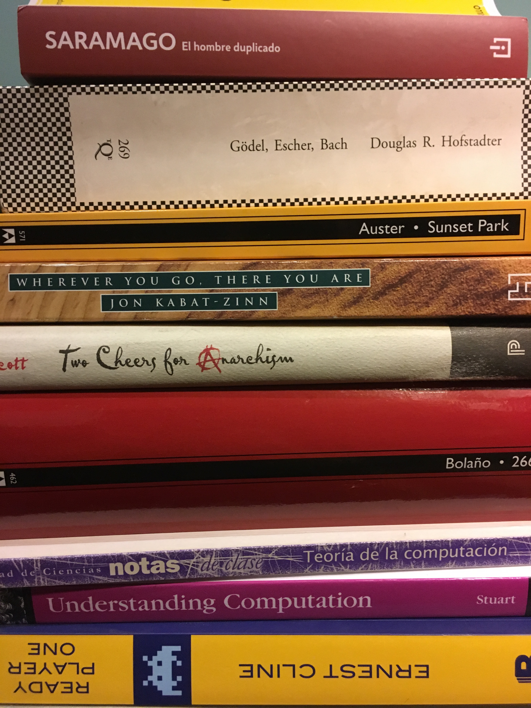

El 2016
No técnicos

El 2016 fue un mal año para mis lecturas no técnicas. Solamente recuerdo haber leído “La maravillosa vida breve de Oscar Wao” de Junot Díaz. Me gustó bastante: es medio triste pero lo que recuerdo con más claridad es el narrador, cuya personalidad (y por lo tanto narración) contrasta con la del protagonista. Aparte de eso creo que no leí ninguna otra novela. Recuerdo vagamente “Ready Player One” pero esa me pareció muuuy mala. Creo que el público objetivo de esa novela son adolescentes, tal vez. Empecé a leer “2666” de Roberto Bolaño y me he colgado. Cuando me leí “Los Detectives Salvajes”, también de Bolaño, me gustó mucho la habilidad que tiene el autor para cambiar de un narrador a otro y crear por cada capítulo un nuevo mundo, una nueva forma de ver el mundo. Si bien en “2666” hay multiples personajes de distintas nacionalidades no pasa lo mismo: el narrador es omnisciente y parece ser único. Además el ritmo es más lento, lo que me ha dificultado avanzarlo. También empecé a leer “Wherever you go , there you are” de Jon Kabat-Zinn. Es un libro sobre meditación y esta medianamente relacionado con la onda de mindfulness que es algo que me ha empezado a interesar últimamente. Voy por la mitad y es un libro relativamente fácil de digerir y retomar. Creo que la intención es que sea una especie de “manual” de meditación al que uno puede volver de tanto en tanto. También empecé a leer “Two cheers for anarchism” de James C. Scott. Son una colección de escritos por el mismo autor que pretenden motivar, de forma “orgánica”, el anarquismo.
También, después de 5 o 6 años, retomé “Gödel, Escher, Bach” de Douglas R. Hofstadter. Es difícil describir de qué trata: el punto es que como su nombre describe combina los descubrimientos matemáticos de Gödel con las gráficas surreales de Escher y la música de Bach. Es un libro medianamente pesado y abstracto, pero también divertido y con miles de detalles por descubrir. Tengo entendido que inspiró a toda una generación de personas a estudiar Computer Science en Estados Unidos.
Técnicos
En cuanto a lecturas técnicas creo que tampoco tuve muchas completas. Compré “Understanding Computation” por Tom Stuart y lo he estado leyendo. Algo divertido es que muestra implementaciones reales de varios conceptos. Por ejemplo muestra en Ruby como implementar el algoritmo que transforma un autómata finito no determinista en un autómata finito determinista y otras cosas por el estilo. Creo que en mi curso de “Lenguajes y autómatas” de la universidad no vimos implementaciones de código de ninguno de esos conceptos. La utilidad de esto es que por ejemplo uno alcanza a ver una forma de implementar expresiones regulares. De ese libro llegué hasta un capítulo en el que se introduce el cálculo lambda y una forma de describirlo con procedimientos en Ruby. Decidí dejarlo por un rato y ver, rapidamente, una aproximación un poco más formal a los mismos temas con el libro “Teoría de la Computación” por Rodrigo De Castro Korgi de la Universidad Nacional. Es un libro más formal, en ocasiones demasiado seco, y sobre todo teórico. Tal vez todo esto último sea dado que son las notas de clase de un curso, es decir la idea es que sean complementadas por clases de un profesor. Todo este interés por automátas y expresiones regulares que he tenido es por que he todo el tema de parsing ha sido un gran “misterio” para mí. Otros recursos relacionados que he consumido son:
Cómics / Novelas gráficas
Por último también voy a incluir los comics o novelas gráficas o como las quieran llamar. Durante RC y estando en Nueva York me era relativamente fácil acceder a algunos comics. Una compañera de RC me prestó algunos pero desafortunadamente no recuerdo los nombres. Empecé a leer “Saga” por Brian K Vaughan y Fiona Staples. Es una mezcla de ciencia ficción, tiene un estílo muy adulto mostrando violencia o sexo pero no de una forma gratuita y además no se toma demasiado en serio a si mismo. Los personajes tienen una “personalidad” bien definida y divertida. De “Saga” alcancé a leer los dos primeros volumenes en Estados Unidos y compré el tercero acá en Colombia. Se pueden conseguir en Panamericana pero calculo que a $20.000 más caros que en Estados Unidos. Otro comic que empecé a leer es “Paper Girls” del mismo escritor pero diferentes artistas. Este es un poco más serio que el anterior pero también se me hace que Vaughan sabe definir sus personajes muy bien. De este solo alcancé a leer el primer volúmen por que el segundo salía en Diciembre. Este creo que es más difícil de conseguir en Colombia así que creo que va a pasar un tiempo antes de que pueda retomarlo. Y por último en una nota mas seria leí la adaptación gráfica de “Ciudad de cristal” por Paul Auster hecha por Paul Karasik y David Mazzucchelli. Me interesó por que Mazzucchelli es el mismo que escribió y dibujó “Asterios Polyp” que es una novela gráfica que recomiendo mucho.
El 2017
Ahora estoy leyendo “El hombre duplicado” de José Saramago. De Saramago leí “Ensayo sobre la ceguera”, “Ensayo sobre la lucidez” y “Las interminencias de la muerte” y me quedo gustando su estílo. También compré “Sunset Park” de Paul Auster. Así que espero leerme completos esos y terminar los que dejé pendientes del año pasado. También espero leer más novelas gráficas y ojalá que ciertos cambios geográficos que creo que tendré me faciliten eso. Quiero leerme “I am a strange loop” del mismo autor de “GEB”. También hay unos tantos libros de no-ficción que me interesan:
- Peak: Secrets from the New Science of Expertise
- Weapons of Math Destruction: How Big Data Increases Inequality and Threatens Democracy
- A Guide to the Good Life: The Ancient Art of Stoic Joy
Ojalá todo esto no resulte demasiado ambicioso y eventualmente logre terminar más de lo que leí este año.